Кризисная психология — это направление, в котором психологи помогают людям справляться с острыми кризисными состояниями, последствиями стресса и психологической травмы. Мы составили рейтинг актуальных программ по обучению кризисных психологов, включающих профессиональную переподготовку, дистанционный формат и получение диплома установленного образца. В ходе обучения слушатели осваивают навыки консультирования, методы оказания экстренной психологической помощи и изучают психологические аспекты кризисных ситуаций. Программы подходят для тех, кто планирует получить новую профессию или расширить профессиональные компетенции в области оказания психологической поддержки.
Информация обновлена:
ТОП онлайн-курсов обучения по кризисной психологии
- 🏆 Кризисный психолог — Московский институт психологии (по промокоду kursy скидка 🎁 10%)
- 🏆 Кризисная психология — Smart
- 🏆 Психолог-консультант. Методы и технологии оказания психологических услуг населению и организациям с расширенной подготовкой в области кризисной психологии — НАДПО (по промокоду onlinekursy действует скидка 🎁 5%)
- Повышение квалификации для психологов: Кризисная психология — Talentsy (по промокоду EDPART5 скидка 🎁 5%)
- Кризисная психология – Международная школа практической психологии (МШПП)
- Клиническая психология со специализацией в экстремальных ситуациях — АНО «НИИДПО»
- Кризисный психолог — Московский институт технологий и управления
- Кризисная психология. Оказание психологической помощи в экстремальных ситуациях и при психологических травмах — МИПО (по промокоду onlinekursy действует скидка 🎁 10%)
- Кризисная психология с присвоением квалификации «Кризисный психолог» — НЦРДО (по промокоду onlinekursy действует скидка 🎁 5%)
- Кризисная психология. Оказание психологической помощи в экстремальных ситуациях и при психологических травмах — Институт Профессионального Образования
- Экстренная и кризисная психология — Институт прикладной психологии в социальной сфере
- Кризисная психология. Оказание психологической помощи в экстремальных ситуациях и при психологических травмах — ЦАППКК (по промокоду onlinekursy действует скидка 🎁 5%)
- Кризисная психология — Учебный центр АПОК
- Кризисная психология —ЭКОДПО
Отличительные преимущества каждого дистанционного курса обучения по экстремальной психологии
| № | Курс и школа | Отличительные преимущества | Ссылка |
|---|---|---|---|
| 🥇 | Кризисный психолог – МИП | Супервизии, международное приложение к диплому, партнерство с ОППЛ, доступ 24/7, диплом международного образца | Перейти |
| 🥈 | Кризисная психология – Smart | Диплом + первые клиенты, налоговый вычет, членство в ОППЛ и АППП, модуль по детской и семейной психологии | Перейти |
| 🥉 | Психолог-консультант по кризисной психологии – НАДПО | От 1360 часов, диплом с двумя квалификациями, сильный преподавательский состав | Перейти |
| 4 | Кризисная психология – Talentsy | Telegram-чат, демо-сессии, бессрочный доступ, супервизии, занятие в мини-группах | Перейти |
| 5 | Кризисная психология – МШПП | MBA-документ, 40 экспертов, модуль по продвижению, очные встречи, поддержка от центра карьеры | Перейти |
| 6 | Клиническая психология со специализацией в экстремальных ситуациях – АНО «НИИДПО» | 17 месяцев, 2 квалификации, приложение «АкадемСити», 13000+ вебинаров | Перейти |
| 7 | Кризисный психолог – MITM | Документ гос. образца, гибкий график, налоговый вычет, поддержка 24/7 | Перейти |
| 8 | Кризисная психология – МИПО | Карьерный коучинг, гайд по психотерапии, 6 преподавателей, библиотека Юрайт | Перейти |
| 9 | Кризисная психология – НЦРДО | Диплом в реестре, библиотека ЛитРес, неограниченные попытки сдачи, карьерная поддержка | Перейти |
| 10 | Кризисная психология – ИПО | 3 документа, кейсы, 2 бонус-курса, карьера и вакансии от партнёров | Перейти |
| 11 | Экстренная и кризисная психология – ИППСС | Мини-группы, библиотека вебинаров, тройки, преподаватель-супервизор с 20+ лет стажа | Перейти |
| 12 | Кризисная психология – ЦАППКК | Аудиолекции, бессрочный доступ, консультации HR, онлайн-сопровождение | Перейти |
| 13 | Кризисная психология – АПОК | Гибкий график, бесплатная доставка диплома, скидки, тариф с индивидуальным куратором | Перейти |
| 14 | Кризисная психология – ЭКОДПО | Персональный график, 0% рассрочка, ускоренное обучение, лицензия Минобрнауки | Перейти |
1. 🏆 Кризисный психолог – Московский институт психологии
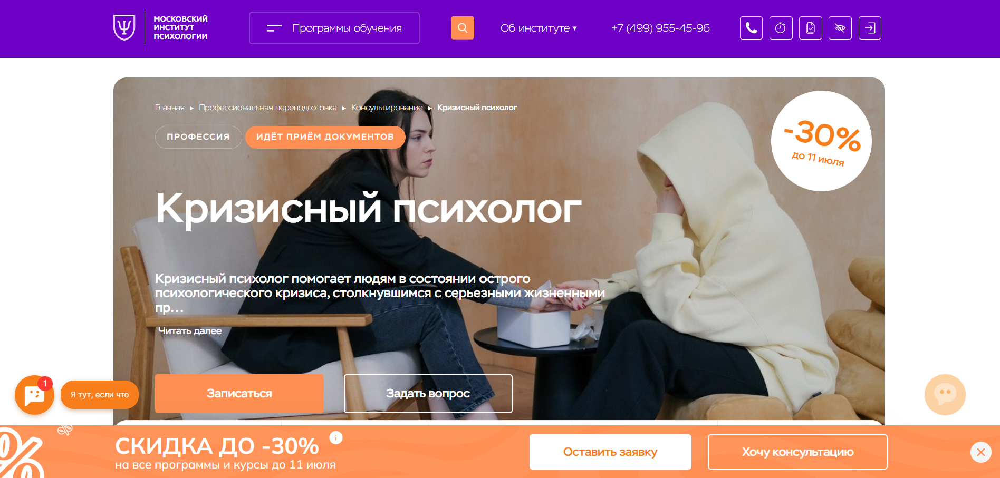
- ✅ Официальный сайт: mip.institute
- 💸 Цена: 61 686 ₽ (скидка 30%, до этого — 88 000 ₽)
- 💳 Рассрочка: доступна 12 месяцев по 5 100 ₽, без переплат
- 📚 Формат: дистанционный формат, видеолекции, тесты, практические задания, разбор кейсов, супервизии
- ⏳ Продолжительность: 8 месяцев, 1080 академических часов
- 📜 Документ: диплом о профессиональной переподготовке с международным приложением
- 📝 Трудоустройство: получение квалификации для частной практики, официальное подтверждение статуса
- 🔷 Для кого подходит курс: для новичков, практикующих специалистов, желающих подтвердить квалификацию, и тех, кто хочет помочь себе и близким
Особенности:
Образовательная программа нацелена на развитие профессиональных компетенций в сфере оказания экстренной психологической помощи. Обучение проходит в дистанционном формате с доступом к лекциям, тестированию и разбору реальных случаев. Слушатели осваивают аспекты кризисной терапии, получают навыки консультирования и узнают, как поддерживать клиентов в сложных жизненных ситуациях. Диплом, полученный после завершения обучения, признается как в России, так и за рубежом. Студенты могут совмещать процесс обучения с основной работой благодаря гибкому графику. Московский институт психологии является партнером ОППЛ, что подтверждает качество предоставляемых образовательных услуг.
Чему учатся студенты:
- Оказывать экстренную психологическую помощь при острых кризисных состояниях
- Применять методы диагностики и сопровождения клиентов с эмоциональной травмой
- Планировать комплексную помощь с привлечением смежных специалистов
- Работать с травмами, выгоранием, личностными кризисами и стрессом
- Оценивать психологические и этико-правовые аспекты кризисного вмешательства
Преподаватели:
- Додонова Ирина Викторовна — Практикующий психолог, сертифицированный коуч ICU и ICA, руководитель программы "Психологическое консультирование"
- Валуев Олег Сергеевич — Консультирующий психолог экзистенциального направления, исследователь, автор более 150 научных публикаций
Преимущества:
- Удобный дистанционный формат обучения
- Доступ к платформе и материалам 24/7
- Профессиональное сообщество выпускников и преподавателей
- Пошаговая подготовка к практике консультирования
- Диплом с международным признанием
- Программа охватывает как теоретический, так и практический аспект кризисной психологии
- Кураторская поддержка на всех этапах прохождения программы
- Возможность работать дистанционно после окончания курса
Отзывы учеников:
Слушатели отмечают качественное обучение, профессионализм преподавателей и насыщенность курса. Отмечаются практические задания, которые помогают лучше понять специфику кризисных ситуаций. Студенты довольны дистанционным форматом и возможностью совмещать обучение с основной работой. Часто упоминается высокий уровень обратной связи и помощь в адаптации к профессии.
Перейти на официальный сайт курса2. 🏆 Кризисная психология – Smart
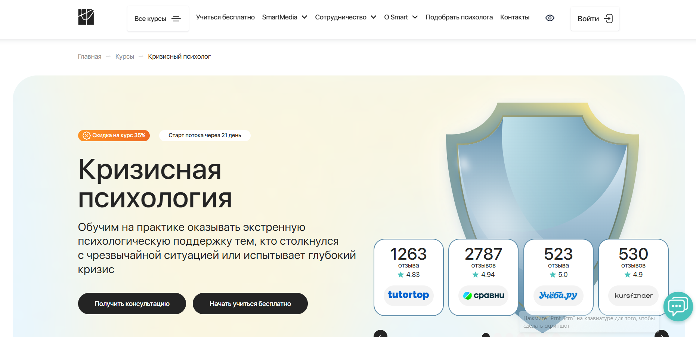
- ✅ Официальный сайт: smart-inc.ru
- 💸 Цена: от 179 900 ₽ со скидкой 35% —
- 💳 Рассрочка: от 7496 ₽/мес. с 3, 6, 12, 24 месяца, без переплат, первый платёж через месяц
- 📚 Формат: дистанционный формат: видеолекции, практические задания, сессии «вопрос-ответ», групповые супервизии, обратная связь от экспертов
- ⏳ Продолжительность: от 8 до 12 месяцев, 500–756 часов
- 📜 Документ: диплом о профессиональной переподготовке установленного образца
- 📝 Трудоустройство: помощь центра карьеры, предоставление первых клиентов, сопровождение после окончания курса
- 🔷 Для кого подходит курс: начинающим и практикующим психологам, специалистам в социальной сфере, клиническим и семейным психологам, желающим освоить кризисную психологию
Особенности:
Курс сочетает теоретическую базу и практический аспект кризисной психологии. Студенты проходят обучение на платформе с круглосуточным доступом к материалам, участвуют в групповых практикумах, получают навыки консультирования в острых кризисных состояниях и ситуациях. После прохождения обучения слушатели способны оказывать экстренную психологическую помощь при психологических травмах и в экстремальных ситуациях. В программу входят модули по возрастной и клинической психологии, методам диагностики, работе с ПТСР и другими последствиями стресса. По завершению курсов студенты получают дипломы и могут работать в кризисных центрах или начать частную практику.
Чему учатся студенты:
- Оказывать экстренную психологическую поддержку при кризисных ситуациях
- Проводить диагностику психического состояния клиентов
- Применять методы оказания помощи при утрате, разводе, насилии, потере работы
- Консультировать родственников пропавших без вести
- Работать с травмами, ПТСР, сложными эмоциональными состояниями
- Использовать техники оказания психологической помощи в индивидуальной и групповой работе
- Проводить супервизии и разбор кейсов с ментором
Преподаватели:
- Никита Ерин — кризисный и корпоративный психолог, коуч, преподаватель, более 8 лет практики, ведущий тренингов
- Александра Тахтарова — эксперт и преподаватель института Smart, участник профессиональных объединений
Преимущества:
- Обучение проходит в дистанционном формате — удобно совмещать с работой
- Получение диплома о профессиональной переподготовке, признанного в России и за рубежом
- Доступ к первому опыту консультирования через платформу SmartMental
- Сопровождение от менторов, тьюторов и кураторов на протяжении всего курса
- Возможность оформить налоговый вычет 13% от стоимости обучения
- Бонусные модули по детской и семейной психологии, кризисам в бизнесе
- Членство в ОППЛ и АППП — профессиональные сообщества для развития
- Практико-ориентированная программа с фокусом на реальные кейсы
Отзывы учеников:
Студенты курса отмечают высокий уровень организации дистанционного обучения, внимательную обратную связь от кураторов и преподавателей, а также большое количество практики. Особенно ценят возможность получить клиентов ещё в процессе обучения и сопровождение после его завершения.
Перейти на официальный сайт курса3. 🏆 Психолог-консультант. Методы и технологии оказания психологических услуг населению и организациям с расширенной подготовкой в области кризисной психологии — Национальная академия дополнительного профессионального образования
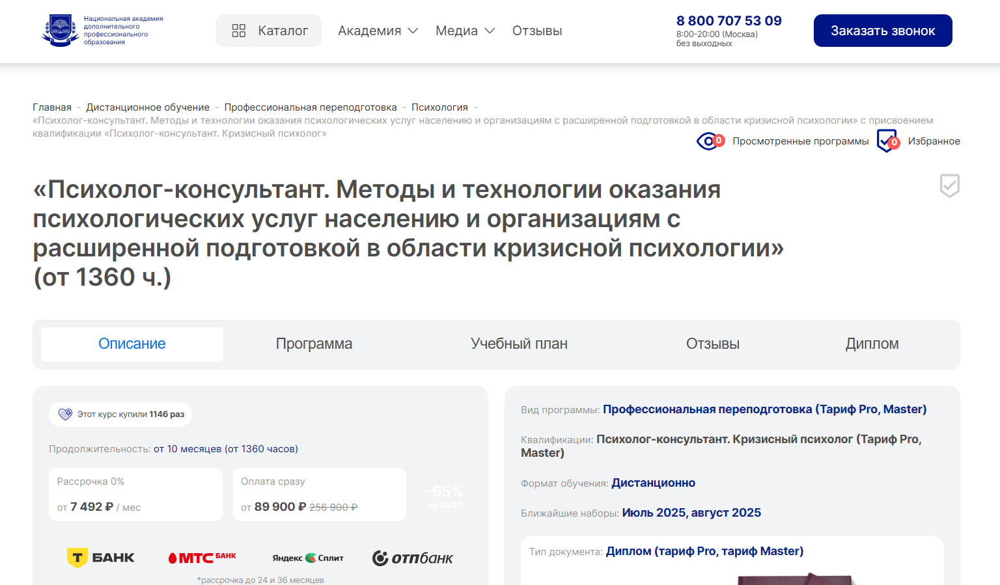
- ✅ Официальный сайт: nadpo.ru
- 💸 Цена обучения: 89 900 ₽ со скидкой, полная цена 256 900 ₽
- 💳 Рассрочка: доступна по запросу от 7 492 ₽ на 12 месяцев
- 📚 Формат: дистанционный формат: видеолекции, домашние задания, тесты
- ⏳ Продолжительность: от 1360 часов
- 📜 Документ: диплом о профессиональной переподготовке с присвоением квалификации "Психолог-консультант. Кризисный психолог"
- 📝 Трудоустройство: способствует профессиональному росту и расширению сферы практики
- 🔷 Для кого подходит курс: для тех, кто планирует освоить кризисную психологию, а также практикующим специалистам в области психологического консультирования и клинической психологии
Особенности:
Программа создана с акцентом на практические навыки консультирования в кризисных ситуациях. Обучение проводится в дистанционном формате, что позволяет совмещать процесс прохождения курсов с текущей профессиональной деятельностью. Слушатели изучают методы оказания экстренной психологической помощи, осваивают техники диагностики и сопровождения клиентов в экстремальных условиях. Курс подойдет как специалистам, так и тем, кто осваивает новую профессию. После успешного прохождения обучения выдается диплом установленного образца. Материалы доступны в любое время на образовательной платформе. Большое внимание уделяется практическому аспекту и применению знаний в работе с последствиями эмоциональных травм и острых кризисных состояний.
Чему учатся студенты:
- Оказывать психологическую поддержку в острых кризисных состояниях
- Проводить индивидуальные консультации и сопровождение клиентов в кризисе
- Использовать методы диагностики и технологии оказания экстренной помощи
- Работать с психологической травмой и эмоциональными переживаниями
- Применять навыки консультирования в семейных кризисах, в том числе при измене и разводе
- Организовывать сопровождение клиентов в кризисных центрах
Преподаватели:
- Богданова Ирина Викторовна — практикующий психолог, специалист по клинической психологии
- Александров Николай Юрьевич — кандидат психологических наук, эксперт в области кризисного вмешательства
- Галкина Светлана Петровна — преподаватель с опытом работы в службах экстренной психологической помощи
Преимущества:
- Обучение проходит дистанционно — удобно совмещать с работой
- Выдается диплом установленного образца о профессиональной переподготовке
- Фокус на кризисной психологии и практических инструментах
- Материалы доступны в любое время — обучаетесь в удобном темпе
- Актуальные методики оказания психологической помощи в экстремальных ситуациях
- Программа подходит для психологов, социальных работников и медиков
- Курс прошли уже более 1100 студентов
Отзывы учеников:
Слушатели часто отмечают качественное обучение, практикоориентированный подход и опытных преподавателей. Положительные отклики касаются гибкого формата обучения и возможности применять полученные знания в работе. Также выделяют удобную образовательную платформу и своевременную обратную связь от кураторов.
Перейти на официальный сайт курса4. Повышение квалификации для психологов: Кризисная психология – Talentsy
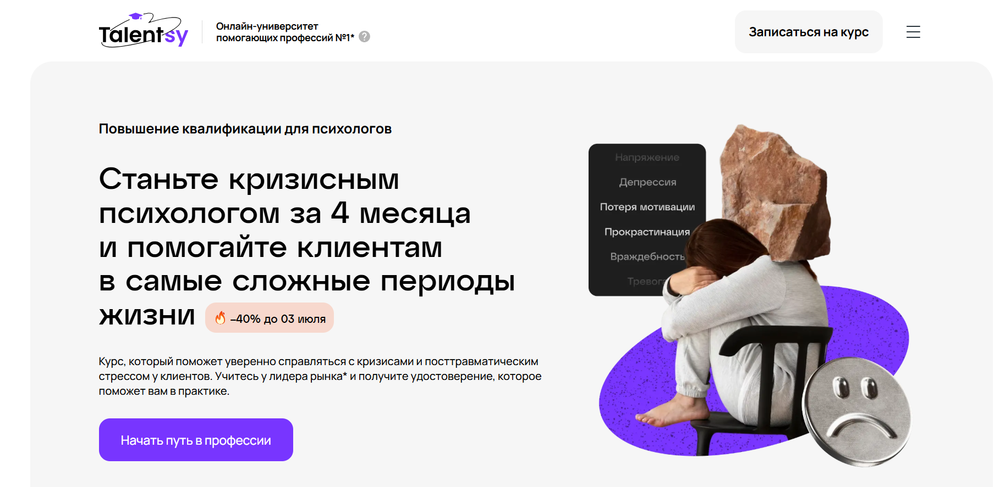- ✅ Официальный сайт: talentsy.ru
- 💸 Цена: от 99 840 ₽ в месяц (от 50 040 ₽/мес по акции ).
- 💳 Рассрочка: от 4 160 ₽ в месяц (от 2 085 ₽/мес по акции )до 24 месяцев, первый платёж через 2 месяца.
- 📚 Формат: дистанционный формат — видеолекции, домашние задания с проверкой, демо-сессии, онлайн-семинары, супервизии, поддержка 12/7, Telegram-чат.
- ⏳ Продолжительность: 4 месяца.
- 📜 Документ: удостоверение о повышении квалификации, заносится в Федеральный реестр.
- 📝 Трудоустройство: помощь в построении практики и позиционировании в профессии.
- 🔷 Для кого подходит курс: начинающим и практикующим специалистам, желающим овладеть навыками оказания психологической помощи в острых кризисных состояниях.
Особенности:
Программа создана для тех, кто хочет освоить кризисную психологию и применить знания на практике. Обучение проходит в дистанционном формате, что удобно для тех, кто совмещает работу и учебу. Слушатели получают практические навыки консультирования, основанные на работе с реальными кейсами. Особое внимание уделено распознаванию суицидальных рисков, работе с посттравматическими состояниями и оказанию экстренной психологической помощи. Программа включает поддержку от супервизоров, работу в мини-группах и бессрочный доступ к материалам. Студенты проходят профессиональную переподготовку, получают документ установленного образца и вступают в профессиональное сообщество. Курс подходит для специалистов, стремящихся углубить знания в области экстремальной психологии и получить дополнительные компетенции.
Чему учатся студенты:
- Оказывать психологическую поддержку при травматических событиях
- Выявлять признаки ПТСР и оказывать помощь
- Работать с эмоциональными травмами клиентов
- Использовать методы диагностики кризисных состояний
- Поддерживать клиента в ситуации утраты, развода, увольнения
- Сохранять личную эмоциональную устойчивость
- Консультировать в острых кризисных ситуациях
- Применять техники оказания экстренной психологической помощи
Преподаватели:
- Мария Токарева — клинический психолог, КПТ-терапевт, опыт работы в МЧС и хосписной помощи
- Валентин Брунов — медицинский и нейропсихолог, врач общей практики, член ОППЛ
Преимущества:
- Дистанционное обучение с доступом 24/7 к материалам
- Диплом заносится в федеральный реестр
- Супервизорские сессии и живые онлайн-семинары
- Практическое задание и работа в мини-группах
- Поддержка от сообщества и преподавателей
- Подходит как для новичков, так и для действующих специалистов
- Скидка 40% при ранней регистрации
- Обучение методикам сопровождения клиентов в кризисе
Отзывы учеников:
Слушатели отмечают высокий уровень преподавателей, удобный дистанционный формат обучения и насыщенность курса практическими материалами. Особенно ценится возможность работать с реальными случаями и получать индивидуальную обратную связь. Также часто выделяют помощь в построении карьеры и профессиональную поддержку после окончания курса.
Перейти на официальный сайт курса5. Кризисная психология – Международная школа практической психологии (МШПП)
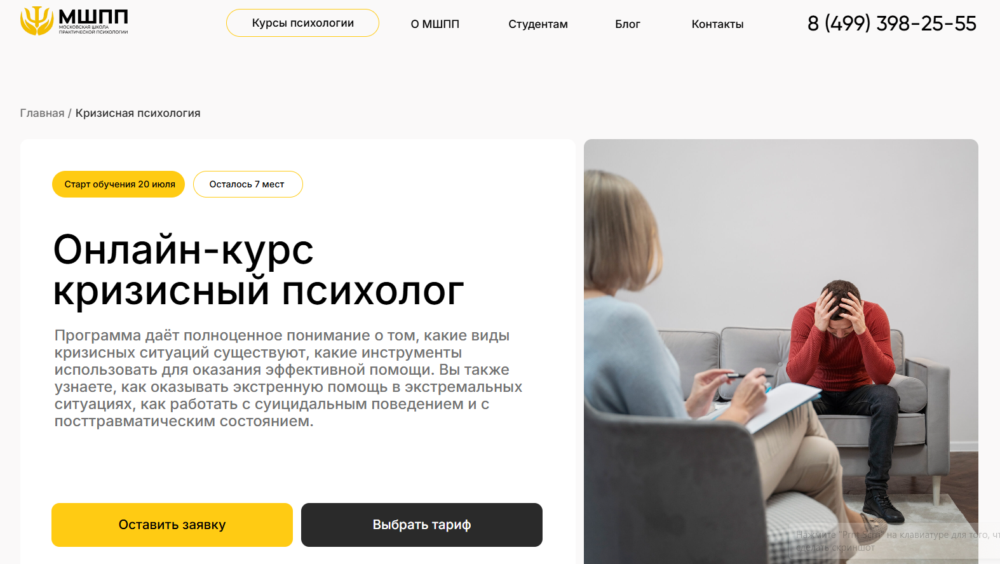
- ✅ Официальный сайт: mspp.online
- 💸 Цена: от 100 000 ₽ до 200 000 ₽ в зависимости от тарифа
- 💳 Рассрочка: от 2 790 ₽ в месяц до 36 месяцев, есть варианты без участия банков
- 📚 Формат: дистанционный формат обучения, видеолекции, практические задания, супервизии, тесты, очные встречи
- ⏳ Продолжительность: 7 месяцев (включая итоговую аттестацию), до 820 часов
- 📜 Документ: диплом о профессиональной переподготовке установленного образца, международный диплом MBA
- 📝 Трудоустройство: поддержка карьерного центра: помощь в резюме, собеседовании и выборе работодателя
- 🔷 Для кого подходит курс: для новичков, практикующих психологов, студентов, специалистов смежных сфер и тех, кто хочет получить новую профессию
Особенности:
Программа обучения охватывает ключевые аспекты кризисной и экстремальной психологии. Студенты проходят полноценную профессиональную переподготовку в дистанционном формате с возможностью совмещать обучение с работой. В курс включены техники оказания экстренной психологической помощи, работа с эмоциональными травмами и стрессовыми состояниями. Обучение построено с упором на практические навыки консультирования и работу в кризисных центрах. Благодаря гибкому формату, материал доступен в любом удобном режиме, а участие в супервизиях позволяет закрепить навыки. По завершении курса выдаются официальные дипломы, которые признаются не только в России, но и за рубежом.
Чему учатся студенты:
- Оказывать экстренную психологическую помощь при ЧС и острых кризисах
- Диагностировать кризисные состояния и применять методы оказания поддержки
- Работать с посттравматическим стрессом и психологической травмой
- Использовать техники стабилизации состояния клиента
- Проводить психологическое консультирование онлайн и офлайн
- Выстраивать профессиональную практику и личный бренд
- Понимать аспекты кризисной и клинической психологии
Преподаватели:
- Курс разработан 40 действующими специалистами-психотерапевтами
- Все кураторы — практикующие кризисные психологи с опытом работы
Преимущества:
- Обучение в дистанционном формате без отрыва от работы
- Доступ к образовательной платформе 24/7 и обратная связь от менторов
- Глубокая практика: супервизии, работа в тройках, групповой разбор кейсов
- Выдаются дипломы, подходящие для трудоустройства и частной практики
- Возможность присоединиться к клубу выпускников и профессиональному сообществу
- Поддержка карьерного центра на всех этапах — от резюме до испытательного срока
- Дополнительные модули по онлайн-консультированию и продвижению
- Промежуточные и итоговые аттестации по каждому модулю
Отзывы учеников:
Слушатели отмечают высокий уровень преподавания, большое количество практических занятий, понятные видеоматериалы и реальную возможность начать частную практику уже в процессе обучения. Многим особенно нравится поддержка кураторов и живое взаимодействие в мини-группах. Учащиеся довольны качеством дистанционного образования и тем, что курс помогает справиться с профессиональным выгоранием и освоить новую востребованную специальность.
Перейти на официальный сайт курса6. Клиническая психология со специализацией в экстремальных ситуациях — АНО «НИИДПО»
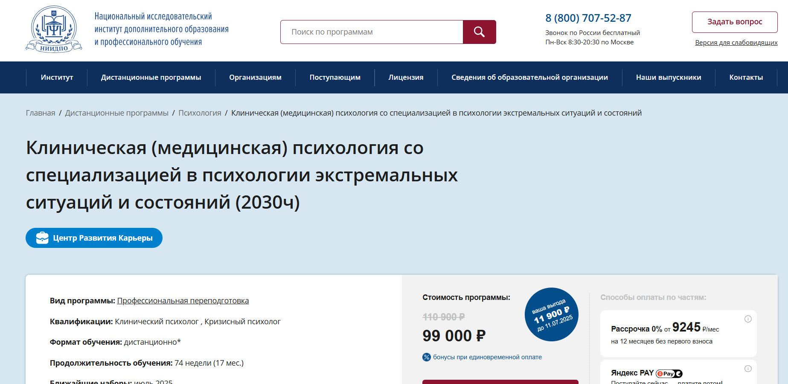- ✅ Официальный сайт: niidpo.ru
- 💸 Цена: 99 000 ₽ ( скидка 11 900 ₽ от полной стоимости 110 900 ₽).
- 💳 Рассрочка: от 9245 ₽/мес на 12 месяцев без первого взноса, 0% переплаты, доступен Яндекс PAY.
- 📚 Формат: дистанционный формат — видеолекции, домашние задания, тесты, практика, вебинары, кейсы, архив лекций, мобильное приложение.
- ⏳ Продолжительность: 74 недели (17 месяцев).
- 📜 Документ: диплом установленного образца о профессиональной переподготовке с квалификациями «Клинический психолог» и «Кризисный психолог».
- 📝 Трудоустройство: Центр Развития Карьеры, групповая поддержка, обучение продвижению личного бренда и запуску практики.
- 🔷 Для кого подходит курс: для тех, кто хочет получить профессию психолога, повысить квалификацию или расширить специализацию в кризисной психологии.
Особенности:
Образовательный процесс полностью организован в дистанционном формате, что позволяет совмещать обучение с работой. После завершения курса слушатели получают бессрочный доступ ко всем материалам. Учебный план охватывает клиническую и кризисную психологию, а также основы психиатрии и экстремальной психологии. Студенты учатся оказывать экстренную психологическую поддержку, осваивают методы оказания помощи при психологической травме и учатся консультированию в кризисных ситуациях. Также курс развивает практические навыки диагностики, сопровождения клиентов, преодоления стрессовых состояний. Программа подходит как новичкам, так и опытным специалистам. Центр Карьеры помогает выстраивать успешную практику после прохождения обучения.
Чему учатся студенты:
- Психологическому консультированию и навыкам консультирования
- Методам диагностики и оказания психологической помощи
- Работе с эмоциональными травмами, острыми и хроническими кризисами
- Организации частной практики и формированию личного бренда
- Кризисной психологии и оказанию экстренной психологической поддержки
- Аспектам кризисной и клинической психологии в дистанционном обучении
- Психосоматике, психотерапии и невропатологии
- Психологическому сопровождению клиентов и работе в кризисных центрах
Преподаватели:
- Бойцова Ирина Александровна — практикующий врач-невролог
- Губарева Наталия Владимировна — медицинский психолог, специалист в зависимом поведении и семейном консультировании
- Иващенко Лариса Борисовна — эксперт в нейропсихологии
Преимущества:
- Выдается диплом о присвоении квалификаций по окончании обучения
- Формат проходит дистанционно — без очных встреч
- Возможность совмещать обучение с работой
- Профессиональные компетенции подтверждаются итоговыми экзаменами
- 13000+ записей вебинаров доступны на весь период обучения и 90 дней после
- Поддержка Центра Карьеры с 8 месяца обучения
- Бонусы за единовременную оплату
- Платформа доступна с телефона — приложение «АкадемСити»
Отзывы учеников:
Слушатели отмечают удобный дистанционный формат, насыщенную теоретическую и практическую часть, профессиональных преподавателей. Высоко оценивается доступность материалов, гибкий график, возможность совмещать с работой и поддержка Центра Развития Карьеры.
Перейти на официальный сайт курса7. Кризисный психолог — Московский институт технологий и управления
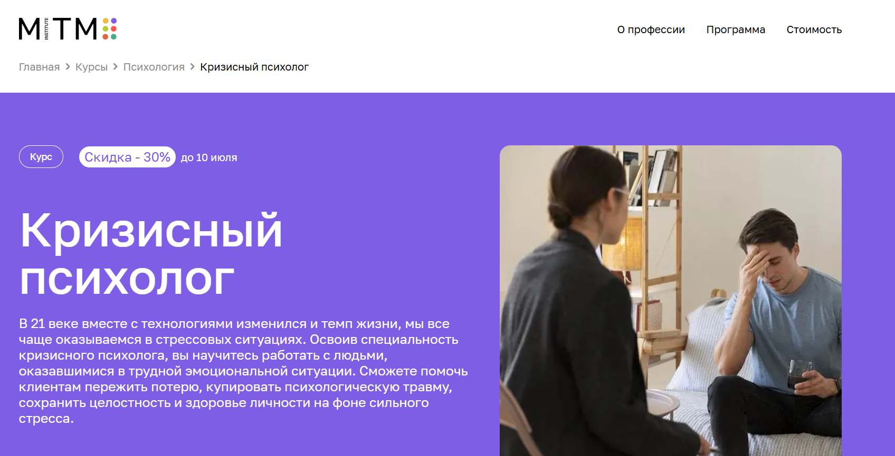- ✅ Официальный сайт: mitm.institute
- 💸 Цена: от 39 960 ₽ со скидкой 30%
- 💳 Рассрочка: от 3 330 ₽ на 12 месяцев, без переплат, доступна через Тинькофф Банк
- 📚 Формат: дистанционный формат — видеоуроки, практические задания, тесты, онлайн-встречи с экспертами
- ⏳ Продолжительность: 4 месяца, 400 академических часов
- 📜 Документ: диплом о профессиональной переподготовке государственного образца
- 📝 Трудоустройство: подготовка к практике в кризисных центрах и консультациях, формирование профессиональных компетенций
- 🔷 Для кого подходит курс: для действующих психологов и педагогов, а также начинающих, желающих получить новую востребованную профессию
Особенности:
Курс создан для тех, кто хочет работать с клиентами в острых кризисных состояниях, включая ПТСР, утрату и последствия сильного стресса. Обучение проходит полностью онлайн, что позволяет совмещать обучение с работой. В процессе изучения уделяется внимание методам оказания экстренной психологической помощи, техникам диагностики и профилактике профессионального выгорания. Программа адаптирована под современные требования рынка и проходит при поддержке опытных менторов и кураторов. После успешного завершения курса выдается диплом установленного образца, подтверждающий полученные навыки. Есть поддержка 24/7 и участие в профессиональном сообществе.
Чему учатся студенты:
- Оказывать экстренную психологическую помощь в острых кризисных ситуациях
- Проводить психологическое консультирование и психодиагностику
- Работать с эмоциональными травмами, депрессиями, фобиями и расстройствами личности
- Поддерживать профессиональное здоровье и предотвращать выгорание
- Изучать аспекты экстремальной психологии и методы адаптации к стрессу
Преподаватели:
- Койфман Юлианна Евгеньевна — член ICPA, более 7 лет практического опыта
- Латынцева Ольга Анатольевна — семейный психолог, эксперт на ТВ, более 10 лет опыта
- Пропускова Ксения Сергеевна — специалист по арт-терапии и телесно-ориентированной терапии, член ППЛ
Преимущества:
- Обучение проходит в дистанционном формате — учитесь в удобное время
- Материалы и видеоуроки доступны до конца обучения
- Поддержка куратора и менторов на всех этапах
- Бесплатная консультация перед началом обучения
- Возможность вернуть 13% от стоимости через налоговый вычет
- Документ государственного образца, подтверждающий присвоение квалификации
- Интерактивные форматы: практикумы, встречи с экспертами, обсуждения в чатах
- Совместимость с занятостью: не требует отрыва от работы
Отзывы учеников:
Слушатели чаще всего отмечают доступность дистанционного формата, насыщенность практическими навыками консультирования и высокий уровень обратной связи от преподавателей. Многие подчеркивают, что курс помогает не только освоить новую профессию психолога, но и лучше справляться со стрессом в повседневной жизни.
Перейти на официальный сайт курса8. Кризисная психология. Оказание психологической помощи в экстремальных ситуациях и при психологических травмах – Московский институт профессиональной переподготовки
- ✅ Официальный сайт: mipo.msk.ru
- 💸 Цена: от 43 945 ₽ (со скидкой 30%)
- 💳 Рассрочка: до 24 месяцев, платеж от 1 832 ₽/мес
- 📚 Формат: дистанционный формат, онлайн-вебинары, тесты, практические задания, лекции, сопровождение куратора
- ⏳ Продолжительность: 5 месяцев / 458 часов
- 📜 Документ: диплом о профессиональной переподготовке, регистрация в ФИС ФРДО
- 📝 Трудоустройство: сопровождение Центра развития карьеры, возможность частной практики
- 🔷 Для кого подходит курс: для начинающих, практикующих специалистов, желающих получить официальное подтверждение квалификации или освоить профессию психолога для себя
Особенности:
Курс разработан для освоения навыков консультирования в условиях кризисных ситуаций. Программа охватывает аспекты кризисной, клинической и экстремальной психологии, адаптирована под дистанционное обучение с доступом к образовательной платформе. Студенты изучают методы оказания экстренной психологической помощи, проходят обучение под руководством опытных клинических и практикующих специалистов. Обучение проводится в дистанционном формате, что позволяет совмещать прохождение программы с работой и личной жизнью. По окончании обучения выдается диплом установленного образца с регистрацией в федеральной системе. В рамках курса предоставляется гайд по психотерапии, доступен карьерный коучинг и помощь в профессиональном развитии.
Чему учатся студенты:
- Оценивать психическое состояние клиентов в острых кризисных и экстремальных ситуациях
- Понимать последствия стресса и психологической травмы
- Осваивать методы диагностики и стабилизации психического состояния
- Изучать клиническую и экстремальную психологию
- Проводить психологическое консультирование и сопровождение
- Применять практические инструменты работы с посттравматическими переживаниями
Преподаватели:
- Урывчикова Татьяна Геннадьевна — клинический психолог, нейропсихолог, член ассоциации когнитивно-поведенческой терапии
- Перемолотова Ирина Александровна — арт-терапевт, член ICI, практикующий психолог
- Цяпало Анна — профессиональный психолог, член Ассоциации психоаналитического коучинга
- Миркина Елена — клинический психолог, президент Фонда содействия развитию человеческого потенциала
- Сальникова Дарья — специальный психолог, научный сотрудник РАО
- Балобанов Василий — семейный психолог, автор обучающей методики, бизнес-наставник
Преимущества:
- Прохождение курсов полностью дистанционно в удобное время
- Получение официального диплома о профессиональной переподготовке
- Поддержка менторов, методистов и службы заботы на всех этапах обучения
- Актуальные знания в области оказания психологической помощи
- Доступ к видеоматериалам, кейсам и библиотеке Юрайт
- Постоянная обратная связь и сопровождение индивидуального куратора
- Возможность работать с клиентами уже в процессе обучения
Отзывы учеников:
Слушатели курса особенно отмечают удобный дистанционный формат, сильный преподавательский состав и качественные учебные материалы. Большинство студентов положительно отзываются о поддержке кураторов и оперативной обратной связи. Также ценятся практические задания и доступ к реальным кейсам, что помогает развивать профессиональные компетенции и уверенно оказывать психологическую помощь в кризисных ситуациях.
Перейти на официальный сайт курса9. Кризисная психология с присвоением квалификации «Кризисный психолог» – Национальный центральный институт развития дополнительного образования
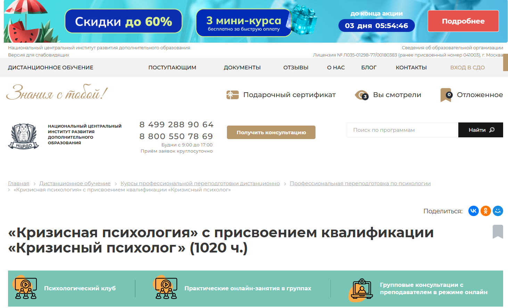
- ✅ Официальный сайт: ncrdo.ru
- 💸 Цена: 68 800 ₽, со скидкой — 53 000 ₽
- 💳 Рассрочка: 1 472 ₽/мес на 36 месяцев или внутренняя рассрочка от института
- 📚 Формат: дистанционное обучение, видеолекции, вебинары, тесты, практические задания, итоговый экзамен
- ⏳ Продолжительность: 6 месяцев (1020 часов)
- 📜 Документ: диплом о профессиональной переподготовке установленного образца
- 📝 Трудоустройство: помощь с карьерным сопровождением, консультации HR-эксперта
- 🔷 Для кого подходит курс: для специалистов с высшим или средним профессиональным образованием, студентов, психологов, желающих работать в кризисных ситуациях
Особенности:
Обучение проходит в дистанционном формате с гибким графиком и возможностью совмещать с работой. Программа разработана для освоения прикладных знаний в области кризисной и экстремальной психологии. Курсанты получают доступ к ЭБС, библиотеке ЛитРес, видеолекциям профессиональных дикторов, а также имеют неограниченные попытки сдачи модулей. После успешного завершения выдается диплом с внесением данных в федеральный реестр. Обучение подходит для специалистов, планирующих консультирование клиентов, переживших стресс или травму. Доступ к материалам сохраняется навсегда.
Чему учатся студенты:
- Оказывать экстренную психологическую помощь в кризисных ситуациях
- Диагностировать острые эмоциональные состояния и риски
- Использовать методы арт-терапии и психокоррекции
- Проводить дистанционное консультирование
- Разрабатывать план сопровождения клиентов с травматическим опытом
- Работать с проявлениями ПТСР и суицидальными состояниями
- Применять технологии стабилизации психоэмоционального состояния
Преподаватели:
- Мельникова Елена Васильевна — опыт с 2010 года
- Тышкевич Марина Юрьевна — научно-практическая деятельность с 2006 года
- Шевченко Дария Игоревна — практикует с 2018 года
- Салихова Мария Романовна — опыт с 2007 года
Преимущества:
- Дистанционный формат позволяет проходить обучение в удобное время
- Сильный преподавательский состав с практическим опытом
- Бесплатный доступ к библиотекам и дополнительным материалам
- Поддержка студентов на всех этапах обучения
- Гибкая система тестов и домашних заданий без жестких дедлайнов
- Возможность получить налоговый вычет 13%
- Индивидуальный подход и помощь в карьерном развитии
- Программа актуальна для работы в кризисных центрах и службах экстренной помощи
Отзывы учеников:
По данным из Яндекс и Google, студенты отмечают качественное обучение, доступный формат, актуальность знаний для практики, профессионализм преподавателей и возможность совмещать учебу с работой. Положительно выделяют обратную связь, поддержку кураторов и простоту подачи материала.
Перейти на официальный сайт курса10. Кризисная психология. Оказание психологической помощи в экстремальных ситуациях и при психологических травмах — Институт Профессионального Образования
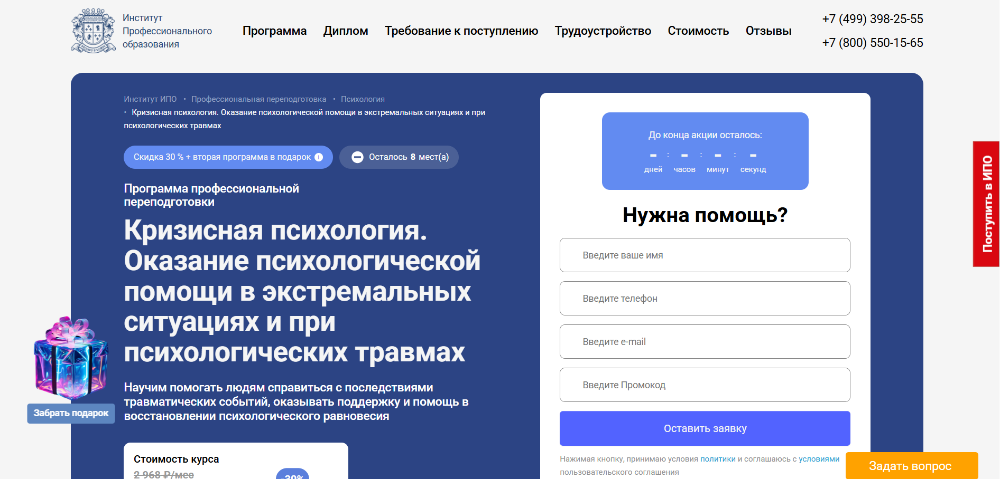
- ✅ Официальный сайт: ipo.msk.ru
- 💸 Цена: со скидкой до 49 874 ₽ вместо 71 249 ₽
- 💳 Рассрочка: от 2 078 ₽ до 24 месяцев, без переплат
- 📚 Формат: дистанционный формат обучения, включает видеолекции, домашние задания, практические задания, тесты, кейс-методы, онлайн-встречи, вебинары
- ⏳ Продолжительность: 458 академических часов (около 5 месяцев)
- 📜 Документ: диплом о профессиональной переподготовке установленного образца, сертификат, удостоверение
- 📝 Трудоустройство: помощь с резюме, собеседованиями, доступ к карьерному центру, рассылка резюме партнёрам
- 🔷 Для кого подходит курс: для психологов, специалистов МЧС, социальных работников, желающих освоить навыки консультирования и сопровождения в кризисных ситуациях
Особенности:
Обучение в дистанционном формате позволяет совмещать профессиональную подготовку с работой или личными делами. Студенты получают теоретическую базу и практические навыки оказания психологической помощи в острых кризисных состояниях. Программа помогает освоить методики консультирования, стабилизации эмоционального состояния клиента, сопровождения при травмах, утрате и ПТСР. После окончания курса слушатели получают квалификацию консультанта в сфере кризисной психологии, что открывает возможность профессиональной практики и консультирования. Предоставляется доступ к образовательной платформе, поддержка менторов и регулярные онлайн-занятия с преподавателями.
Чему учатся студенты:
- Диагностировать психологические аспекты в экстремальных ситуациях
- Оказывать экстренную психологическую поддержку
- Применять методы стабилизации при психологической травме
- Разрабатывать стратегии психологического сопровождения клиентов
- Профилактике ПТСР и профессионального выгорания
- Понимать аспекты кризисной и клинической психологии
- Проводить психологические консультации в дистанционном формате
Преподаватели:
- Бербер Наталья Николаевна — кандидат психологических наук, профессиональный психолог
- Шавырина Анна Алексеевна — преподаватель практики и теории кризисной психологии
- Рыбальченко Наталья Викторовна — психолог, преподаватель философии
Преимущества:
- Гибкий график обучения: заниматься можно в удобном темпе
- Выдается официальный диплом, действующий на территории РФ
- Поддержка менторов и опытных специалистов на всех этапах
- Бессрочный доступ ко всем учебным материалам и библиотеке
- 2 дополнительных курса в подарок при записи на программу
- Включена карьерная поддержка: подготовка к трудоустройству, консультации
- Обучение подходит слушателям с высшим и средним профобразованием
- Проверка знаний: тесты, домашние задания, кейсы
Отзывы учеников:
По данным независимых площадок, студенты отмечают высокий уровень дистанционного образования, практический подход и качество образовательной платформы. Особенно ценится доступ к профессиональным преподавателям и возможность применять знания сразу после прохождения курсов. 87% выпускников говорят, что программа превзошла ожидания, а 71% рекомендуют ИПО друзьям и коллегам.
Перейти на официальный сайт курса11. Экстренная и кризисная психология – Институт прикладной психологии в социальной сфере
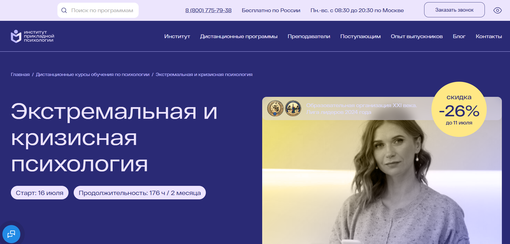- ✅ Официальный сайт: ippss.ru
- 💸 Цена: 11 300 ₽ (скидка -26%)
- 💳 Рассрочка: доступна от 942 ₽/мес.
- 📚 Формат: дистанционный формат обучения, видеоуроки, текстовые лекции, тесты, практические задания, вебинары
- ⏳ Продолжительность: 2 месяца / 176 академических часов
- 📜 Документ: удостоверение о повышении квалификации, зарегистрированное в ФИС ФРДО
- 📝 Трудоустройство: подтверждение квалификации для официальной работы в сфере оказания психологической помощи
- 🔷 Для кого подходит курс: для клинических и практикующих психологов, а также для тех, кто проходит профессиональную переподготовку и осваивает кризисное консультирование
Особенности:
Курс в дистанционном формате обучения позволяет пройти обучение без отрыва от работы и из любого региона. Программа построена на практическом подходе: студенты отрабатывают навыки консультирования в тройках, проходят индивидуальные задания и получают разбор от преподавателя. Слушатели изучают аспекты кризисной психологии, получают доступ к более чем 10 000 часов вебинаров и методическим материалам. По окончании обучения выдается официальный документ, подтверждающий квалификацию, с возможностью трудоустройства в кризисных центрах и службах экстренной помощи. Программа сочетает глубокое изучение теоретического материала с отработкой прикладных инструментов, позволяя оказывать экстренную психологическую поддержку в кризисных ситуациях. Доступ к материалам сохраняется еще на 3 месяца после завершения обучения.
Чему учатся студенты:
- Оказывать экстренную помощь в чрезвычайных ситуациях
- Разбираться в острых стрессовых реакциях и последствиях эмоциональных травм
- Анализировать стадии переживания горя
- Применять методы оказания психологической помощи в кризисных состояниях
- Работать с психологическими аспектами утраты и ЧС
- Разрабатывать индивидуальные алгоритмы консультирования
- Получать навыки сопровождения клиентов на разных этапах кризиса
Преподаватели:
- Плющева Ольга Александровна — клинический психолог, преподаватель психологии, супервизор, более 20 лет практики
Преимущества:
- Дистанционное образование, не требующее высшего психологического образования для поступления
- Официальное удостоверение с регистрацией в федеральном реестре
- Материалы доступны 24/7, возможна учеба с любого устройства
- Вебинары с экспертами и дополнительные методики по оказанию помощи
- Профессиональная поддержка на всех этапах прохождения программы
- Возможность совмещать обучение с работой благодаря гибкому графику
- Обратная связь от преподавателя по практическим заданиям
- Доступ к библиотеке психологических вебинаров
Отзывы учеников:
Слушатели отмечают структурированность подачи материала, удобство дистанционного формата, грамотную организацию поддержки и ценность практических кейсов. Особенно ценится доступ к большому числу вебинаров и возможность пересматривать лекции. Студенты подчеркивают, что курс помогает приобрести уверенность в оказании психологической помощи в острых кризисных ситуациях.
Перейти на официальный сайт курса12. Кризисная психология. Оказание психологической помощи в экстремальных ситуациях и при психологических травмах – Центральная академия профессиональной переподготовки и повышения квалификации кадров
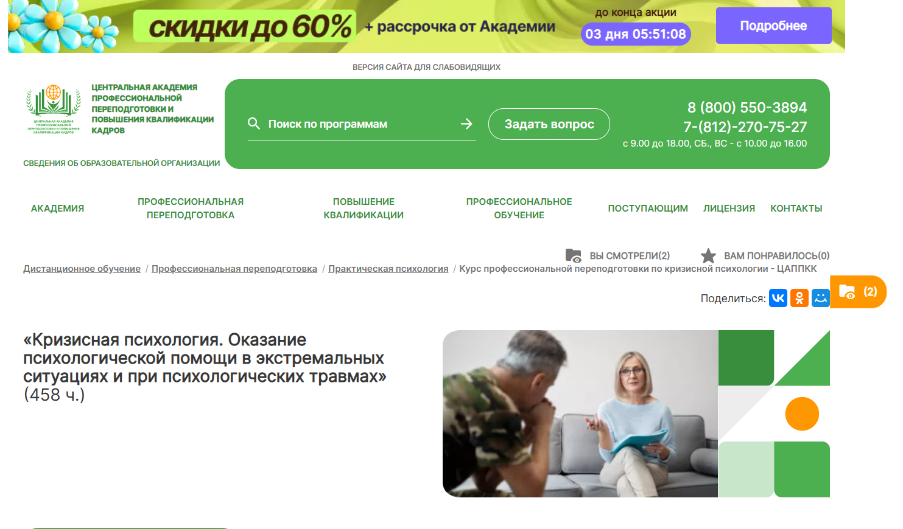
- ✅ Официальный сайт: appkk.ru
- 💸 Цена: 31 500 ₽ (вместо 44 100 ₽, действует акция)
- 💳 Рассрочка: от 875 ₽ в месяц на 36 месяцев
- 📚 Формат: дистанционный формат с лекциями, аудиоматериалами, тестами, вебинарами, домашними заданиями и техподдержкой
- ⏳ Продолжительность: 4 месяца (458 часов)
- 📜 Документ: диплом о профессиональной переподготовке, данные вносятся в ФИС ФРДО
- 📝 Трудоустройство: сопровождение HR-наставника, помощь с резюме, рассылка вакансий, онлайн-консультации
- 🔷 Для кого подходит курс: для желающих освоить кризисную психологию, действующих специалистов и всех, кто интересуется оказанием экстренной психологической помощи
Особенности:
Программа в дистанционном формате разработана методистами академии с учетом требований профстандартов и ФГОС. Обучение дает возможность изучать материал в любое удобное время, включая выходные. Участники получают бессрочный доступ к библиотеке вебинаров и материалам курса, а также аудиолекции от диктора. По завершении обучения выдается диплом установленного образца, данные о котором вносятся в федеральный реестр. Программа рассчитана на освоение практических навыков консультирования в условиях стресса и эмоциональных травм. После прохождения курсов выпускники получают поддержку в трудоустройстве и карьерном развитии.
Чему учатся студенты:
- Оказывать психологическую поддержку в острых кризисных ситуациях
- Проводить первичную диагностику и консультирование
- Использовать методы оказания экстренной помощи
- Применять практические инструменты при работе с эмоциональными травмами
- Осваивать аспекты кризисной и экстремальной психологии
Преподаватели:
- Программа составлена методистами и преподавателями-практиками академии с большим опытом работы
Преимущества:
- Обучение проходит дистанционно с возможностью совмещать с работой
- Постоянный доступ к материалам и вебинарам
- Поддержка куратора на всех этапах обучения
- Возможность применять полученные знания в кризисных центрах и социальной сфере
- Программа подходит для получения новой профессии или расширения текущих компетенций
- Профессиональные компетенции соответствуют государственным стандартам
- Помощь в трудоустройстве от HR-наставника
- Удобная подача документов в электронном виде
Отзывы учеников:
Слушатели отмечают удобный формат дистанционного обучения, оперативную работу службы поддержки, профессионализм преподавателей и доступность всех материалов. Также положительно оценивают сопровождение после окончания курса — особенно рассылку вакансий и помощь в поиске работы.
Перейти на официальный сайт курса13. Кризисная психология — Учебный центр АПОК
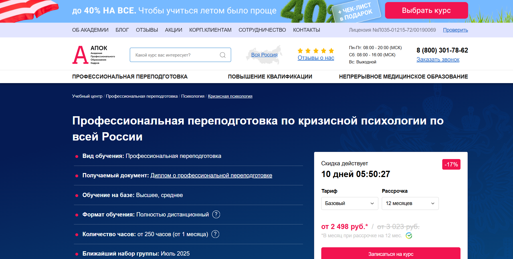
- ✅ Официальный сайт: apokdpo.ru
- 💸 Цена: от 29 980 ₽ со скидкой 17%
- 💳 Рассрочка: от 2 498 ₽/мес. до 12 месяцев без процентов
- 📚 Формат: дистанционный формат обучения с лекциями, тестами, учебными материалами и возможностью задавать вопросы преподавателю
- ⏳ Продолжительность: от 1 месяца, 250+ часов
- 📜 Документ: диплом о профессиональной переподготовке
- 📝 Трудоустройство: помогает в продвижении в профессии и карьерном росте
- 🔷 Для кого подходит курс: для специалистов с высшим или средним профессиональным образованием, желающих освоить кризисную психологию в дистанционном обучении
Особенности:
Программа подготовлена с учетом требований к специалистам, оказывающим экстренную психологическую помощь в условиях кризиса, стресса и эмоциональных травм. Учебный процесс проходит в дистанционном формате, что позволяет совмещать обучение с работой и другими делами. Документы высылаются почтой бесплатно. Возможна регистрация в реестре ФИС ФРДО. Для желающих углубленного подхода доступен тариф с индивидуальными консультациями. Студенты получают практические знания и навыки консультирования для работы в кризисных ситуациях. Материалы доступны в любое время через образовательную платформу. После завершения обучения выдается диплом установленного образца. Подходит для тех, кто планирует работать в кризисных центрах или службах экстренной помощи.
Чему учатся студенты:
- Оказывать экстренную психологическую поддержку
- Понимать аспекты кризисной и экстремальной психологии
- Диагностировать острые кризисные состояния
- Применять методы оказания помощи пострадавшим
- Работать с эмоциональными травмами и последствиями стресса
- Осуществлять психологическое консультирование в сложных жизненных ситуациях
- Развивать практические навыки взаимодействия с клиентами
Преподаватели:
- Имена преподавателей на официальном сайте не указаны. Обучение проводят опытные психологи, практикующие специалисты в области кризисной и клинической психологии.
Преимущества:
- Дистанционное обучение в удобном формате
- Бесплатная доставка диплома по всей России
- Гибкий график и возможность совмещать с работой
- Регистрация диплома в ФИС ФРДО
- Индивидуальные условия обучения на продвинутом тарифе
- Скидки и акции, включая "Ученую семью" и "2=3"
- Беспроцентная рассрочка до 12 месяцев
- Возможность ускоренного прохождения курса
Отзывы учеников:
Студенты отмечают качество преподавания, четкую структуру учебных материалов и практическую направленность программы. Часто упоминаются удобный формат дистанционного обучения, доступность кураторов и своевременная выдача документов. Многие рекомендуют курс коллегам и уже используют полученные знания в работе.
Перейти на официальный сайт курса14. Кризисная психология – ЭКОДПО
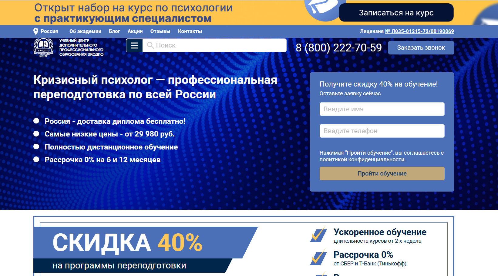- ✅ Официальный сайт: ecodpo.ru
- 💸 Цена: от 29 980 ₽ (эконом-тариф со скидкой 26%).
- 💳 Рассрочка: 0% на 6 и 12 месяцев — от 2 500 ₽/мес.
- 📚 Формат: дистанционный формат — видеоуроки, тесты, онлайн-консультации, домашние задания, индивидуальные занятия.
- ⏳ Продолжительность: от 1,5 до 3 месяцев (от 250 часов).
- 📜 Документ: диплом о профессиональной переподготовке установленного образца с внесением данных в ФИС ФРДО.
- 📝 Трудоустройство: возможность работы в кризисных центрах, психологических службах, реабилитационных и консультативных учреждениях.
- 🔷 Для кого подходит курс: для специалистов с высшим или средним профессиональным образованием, желающих освоить профессию кризисного психолога.
Особенности:
Программа доступна для обучения в любое время года — поступление без набора группы. Образовательный процесс построен на платформе с личным кабинетом, доступ к материалам открыт круглосуточно. Все экзамены сдаются дистанционно, количество пересдач не ограничено и бесплатно. Доставка дипломов по всей России осуществляется за счёт учебного центра. Возможна настройка индивидуального учебного плана. После окончания курса предоставляется подтверждение внесения данных в реестр. Курсы соответствуют требованиям закона №273-ФЗ.
Чему учатся студенты:
- Навыки консультирования в кризисных ситуациях
- Диагностика склонности к суицидальному поведению
- Методы оказания экстренной психологической помощи
- Профилактика профессионального выгорания
- Психологическое сопровождение клиентов в кризисе
- Арт-терапия при психологической травме
- Работа с последствиями стресса и утраты
- Техники психологической защиты в ЧС
Преподаватели:
- Назарова Татьяна Сергеевна — практикующий психолог, методист ЭКОДПО
- Зиновьева Мария Павловна — преподаватель с опытом в клинической психологии
- Ковальчук Андрей Юрьевич — специалист по кризисной психологии, куратор курса
Преимущества:
- Обучение проходит дистанционно — можно совмещать с работой
- Диплом установленного образца с госрегистрацией в ФИС ФРДО
- Индивидуальный график — начинайте сразу после подачи заявки
- Неограниченные бесплатные пересдачи экзаменов
- Поддержка преподавателя на всех этапах
- Программа соответствует профстандартам и ФГОС
- Проверка лицензии доступна через сайт Минобразования
- Оформление договора и доступ — в течение одного дня
Отзывы учеников:
Студенты чаще всего отмечают доступность преподавателей, понятные материалы и быстрый выпуск документов. В отзывах подчеркивается удобный дистанционный формат, который позволяет совмещать обучение с работой. Многие рекомендуют курс за возможность пройти его в сжатые сроки и получить новую квалификацию без лишних затрат.
Перейти на официальный сайт курсаКто такой кризисный психолог?
Кризисный психолог — это специалист, оказывающий срочную психологическую помощь людям, столкнувшимся с острым стрессом, травмой, утратой, насилием, катастрофами или другими экстремальными ситуациями. Его задача — стабилизировать эмоциональное состояние человека, помочь справиться с последствиями шока и предотвратить развитие психических расстройств.
Что делают экстремальные психологи и чем занимаются?
Работа кризисного психолога связана с быстрым реагированием и глубоким пониманием человеческой психики в моменты кризиса. Он оказывает поддержку как индивидуально, так и в группах, на месте происшествия, в медицинских учреждениях или дистанционно.
- Проводят экстренные консультации в первые часы после травмирующего события.
- Помогают справиться с паникой, тревогой, страхом и дезориентацией.
- Оценивают степень психологического ущерба и необходимость дальнейшей терапии.
- Работают с пострадавшими, родственниками жертв и свидетелями трагедий.
- Сотрудничают с МЧС, полицией, медиками, волонтёрами и социальными службами.
Что должен знать и уметь кризисный психолог?
Профессионал в этой области обязан обладать как глубокими теоретическими знаниями, так и развитыми практическими навыками. Он должен быть готов действовать оперативно и безошибочно в нестабильных и стрессовых условиях.
- Понимание основ психологии кризиса, травмы и посттравматического стресса.
- Навыки быстрого анализа эмоционального состояния клиента.
- Умение применять техники психологической саморегуляции и самопомощи.
- Навыки коммуникации в условиях повышенной тревожности и агрессии.
- Психологическая устойчивость и стрессоустойчивость самого специалиста.
Востребованность и зарплаты кризисных психологов в России в 2025 году
В 2025 году профессия кризисного психолога в России становится всё более актуальной. Рост числа кризисных ситуаций, общественная нестабильность, информационная перегрузка и военные конфликты повышают спрос на специалистов, способных оказывать быструю и эффективную помощь.
- Зарплата начинающего кризисного психолога: от 45 000 до 70 000 рублей в месяц.
- Опытные специалисты с практикой в государственных и частных структурах: 80 000–150 000 рублей.
- Частные практики и сотрудничество с международными организациями могут приносить от 200 000 рублей и выше.
Особенно востребованы специалисты, работающие с военными, беженцами, жертвами насилия и катастроф.
Как стать кризисным психологом и где учиться?
Чтобы стать кризисным психологом, нужно пройти специализированное образование и практику. Важно не только овладеть теорией, но и научиться действовать в условиях неопределённости и высокой эмоциональной напряжённости.
- Получите высшее образование по направлению «Психология» или «Клиническая психология».
- Пройдите дополнительное обучение по кризисной и экстренной психологии (МГУ, РГГУ, СПбГУ, МГППУ).
- Пройдите стажировку в службах экстренной помощи, реабилитационных центрах или НКО.
- Регулярно посещайте супервизии, тренинги и курсы повышения квалификации.
Также важно развивать навыки первой психологической помощи (ППП) и обучаться методам работы в кризисных ситуациях по международным стандартам (ICISF, WHO).
Где работает экстремальный психолог?
Сфера деятельности кризисного психолога обширна и включает как государственные, так и коммерческие и некоммерческие структуры.
- Центры психологической помощи и горячие линии.
- Службы МЧС и экстренного реагирования.
- Больницы и травмпункты.
- Центры помощи пострадавшим от насилия.
- Военные и реабилитационные учреждения.
- Школы, университеты и детские дома.
- Некоммерческие организации и благотворительные фонды.
Кому и когда может понадобиться помощь кризисного психолога?
Любой человек может столкнуться с ситуацией, в которой без поддержки специалиста трудно справиться. Помощь кризисного психолога нужна при:
- Потере близкого человека (смерть, развод, расставание).
- Физическом или сексуальном насилии.
- Попадании в ДТП, катастрофу, пожар или теракт.
- Диагностировании тяжёлого заболевания.
- Эмиграции, депортации или вынужденном переселении.
Своевременное обращение к специалисту помогает предотвратить развитие депрессии, ПТСР, панических атак и других серьёзных расстройств.
Преимущества и сложности профессии
Профессия кризисного психолога благородна, но требует огромной личной отдачи. Она подходит тем, кто готов работать с чужой болью, сохранять самообладание в критических ситуациях и постоянно развиваться профессионально.
- Преимущества: высокая значимость работы, реальная помощь людям, постоянный профессиональный рост.
- Сложности: эмоциональное выгорание, работа в стрессовых условиях, необходимость постоянной саморегуляции.
Что такое обучение по кризисной психологии?
Обучение на кризисного психолога — это процесс профессиональной подготовки специалистов, способных эффективно работать с людьми, переживающими острые психоэмоциональные состояния. В программу обучения входят теоретические знания по психологии кризиса, навыки оказания экстренной психологической помощи, техники стабилизации состояния клиента и методы саморегуляции специалиста.
Какие существуют программы обучения экстремальной психологии?
Существуют различные программы: курсы повышения квалификации, профессиональная переподготовка, магистратура и тренинги. Обучение кризисной психологии включает изучение психотравмы, посттравматического стрессового расстройства (ПТСР), острых кризисных состояний и навыков взаимодействия в экстренных ситуациях.
Сколько длится обучение?
Срок обучения зависит от формата: краткосрочные курсы могут длиться от 2 недель до 3 месяцев, программы переподготовки — от 6 месяцев до 1 года, в вузе — от 2 лет и более. Онлайн-обучение также предлагает гибкие форматы с разной длительностью.
Кому подойдет обучение по кризисной психологии?
Кризисное психологическое образование подойдет как практикующим психологам, так и медикам, социальным работникам, педагогам и другим специалистам, сталкивающимся с кризисными ситуациями. Также оно будет полезно волонтерам, сотрудникам МЧС, психотерапевтам и тем, кто хочет освоить экстренную психологическую помощь.
Чему учат на курсах по экстремальной психологии?
На курсах кризисной психологии обучают анализу поведения в стрессовых ситуациях, методам стабилизации психоэмоционального состояния, психологической поддержке при горе, утрате, насилии, катастрофах. Обучение включает теоретические и практические занятия, супервизии и разбор кейсов.
Можно ли пройти обучение онлайн?
Да, обучение кризисной психологии доступно онлайн. Многие институты и образовательные платформы предлагают дистанционные курсы и вебинары с доступом к лекциям, супервизиям и практическим заданиям. Онлайн-формат особенно удобен для регионов и тех, кто совмещает обучение с работой.
Какие навыки развиваются в процессе обучения?
В процессе обучения развиваются навыки активного слушания, быстрого реагирования в кризисной ситуации, эмоциональной устойчивости, эмпатии, проведения психологической стабилизации, оказания первой психологической помощи. Особое внимание уделяется саморегуляции специалиста.
Что входит в программу обучения на кризисного психолога?
Программа обучения включает следующие блоки: основы кризисной интервенции, психология травмы, экстренная помощь, методы восстановления, сопровождение после кризиса, работа с горем и утратой, стресс-менеджмент. Обязательным элементом является практика и супервизия.
Сколько стоит обучение?
Стоимость зависит от формата и учреждения. Онлайн-курсы стоят от 10 000 до 50 000 рублей, переподготовка — от 40 000 до 120 000 рублей, обучение в вузе — от 100 000 рублей в год. Некоторые организации предоставляют скидки, рассрочку или бесплатные вводные модули.
Какие документы выдаются после обучения кризисной психологии?
По окончании курсов выдается удостоверение о повышении квалификации или диплом о профессиональной переподготовке. В случае вузовского обучения — диплом бакалавра или магистра. Сертификаты международного образца выдаются в рамках международных программ обучения.
Можно ли совмещать обучение с основной работой?
Да, большинство программ составлены так, чтобы обучающийся мог совмещать обучение с работой. Особенно удобно проходить дистанционное обучение или вечерние занятия. Также возможна индивидуальная траектория прохождения курса с гибким графиком.
Как выбрать качественную программу обучения по кризисной психологии?
При выборе программы стоит учитывать аккредитацию образовательного учреждения, квалификацию преподавателей, наличие практики и супервизии, отзывы выпускников, формат подачи материала. Хорошая программа включает кейсы, тренинги, интерактив и обратную связь от преподавателей.
Какие карьерные перспективы открываются после получения знаний и навыков по консультированию в кризисных ситуациях?
После обучения можно работать в сфере экстренной психологической помощи, в МЧС, НКО, кризисных центрах, в сфере здравоохранения и образования. Также востребованы специалисты по кризисному консультированию в частной практике и корпоративной среде (HR, EAP-программы).
Нужна ли лицензия для работы кризисным психологом?
Если вы работаете как психолог с клиентами, то необходимо иметь профильное образование. Для работы в государственных и медицинских учреждениях потребуется диплом государственного образца. Дополнительные курсы по кризисной психологии являются частью профессиональной подготовки, но сами по себе не заменяют базового психологического образования.
Какие темы особенно важны в обучении кризисного консультирования?
Особое внимание в обучении уделяется психологии травмы, эмоциональной саморегуляции, работе с суицидальными клиентами, техникам психологической первой помощи, коммуникации в экстремальных ситуациях. Также рассматриваются вопросы профессионального выгорания и восстановления специалиста.
Можно ли начать обучение кризисной психологии без базового образования психолога?
Некоторые курсы допускают слушателей без психологического образования, но для полноценной работы в профессии потребуется получить базовую психологическую подготовку. Курсы подойдут для личного развития, волонтерской работы или начального знакомства с профессией.
Как проходит практика в обучении кризисной психологии?
Практика включает отработку навыков на симулированных ситуациях, участие в супервизиях, наблюдение за работой опытных специалистов, помощь под руководством наставника в кризисных центрах или телефонах доверия. Это важная часть формирования профессиональной компетентности.
Какие подходы используются в обучении на кризисного психолога?
На обучении используют когнитивно-поведенческую терапию, экзистенциальную психологию, гештальт-подход, телесно-ориентированные методы, техники дыхания, элементы психоанализа. Все они адаптируются под острые состояния клиента.
Почему важно обучаться кризисной психологии сегодня?
Современный мир подвержен кризисам: пандемии, войны, техногенные катастрофы, личные трагедии. Обучение кризисной психологии помогает эффективно поддерживать людей в кризисных состояниях, предотвращать суициды, справляться с травмами и формировать устойчивость общества.
------------------------------------------------
Реклама. Информация о рекламодателе по ссылкам в статье.